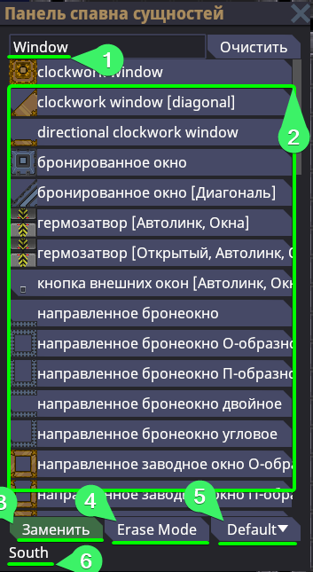
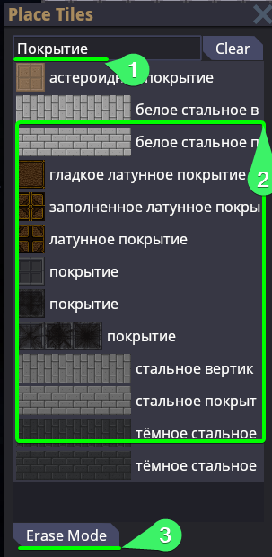
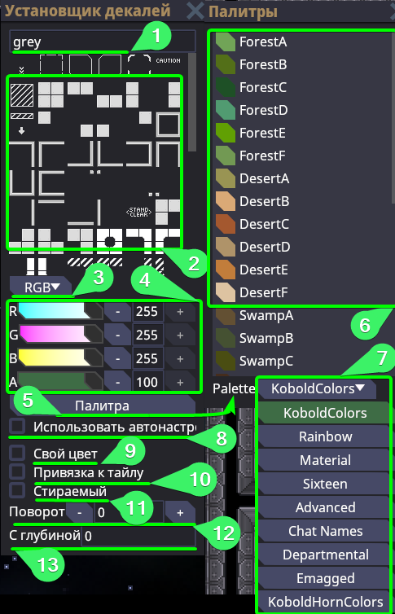
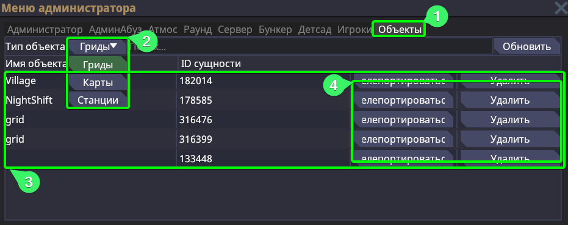
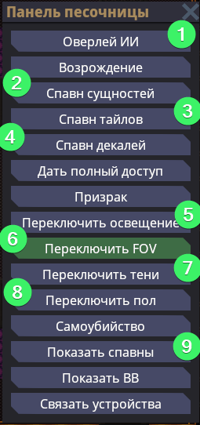
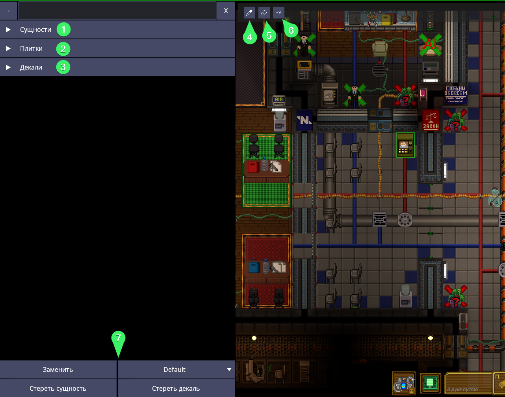
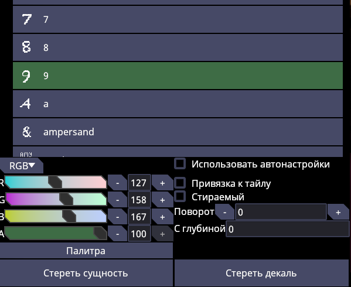

Управление и термины
Терминология
Предполагается, что вы так или иначе уже сталкивались с базовыми терминами профессионального языка мапперов. Но даже на тот случай, когда для вас слова "Тайл" "Декаль" "Мапа" и т.д. - чужды, вы можете сориентироваться по этой таблице.
| Термин | Определение |
|---|---|
| Маппинг | Занятия построения пространства, включающее в себя множество элементов. Маппинг может самым разным, кто-то маппит огромные 3D пространства (больше Level-Design), кто-то маппит как мы 2D пространство песочницы, кто-то работает профессионально и маппит спутниковые и маршрутные карты на реальной мировой карте. |
| Маппер | Соответственно человек, что занимается маппингом |
| Мапа (Map) | Она же Карта. Это полотно (космос), на котором располагаются гриды*. Полотно также принято называть "Сектором". Гриды могут располагаться на разных картах, а каждая карта имеет свой ID слота карты (MapID). Он не сохраняется за конкретной картой, а используется в игровой сессии для определения, за каким порядковым числом закреплено определённое полотно. Айди слота текущий карты можно узнать: через F3, через F7 и при помощи lsmap |
| Ентити (Entity) | Они же сущности или объекты. Зачастую это всё то, что помимо существования физически имеет и функциональность. Энтити может быть довольно много вещей, так как сущность понятие обширное. Если вы видите где-то упоминание Ентити, ЕнтитиID - то имеется в виду сам объект. |
| Грид (Grid) | Это единая сетка размещённых объектов. То есть совокупность соединённых тайлов друг с другом - создают грид, сетку этих тайлов в одной системе. Эта сетка заставляет тайлы двигаться вместе, а соответственно и все объекты на этой сетке. То есть, гридом является например шаттл. Станция, между прочим - то же является гридом, но очень большим. Для одной системы должен соответствовать в идеале один грид. Гриды - ресурсоёмкий объект, а потому нежелательно их плодить в большом множестве. Существует два типа сохраненённых карт, как грид (то есть без полотна) и как карта. Необязательно иметь несколько гридов, чтобы сохранить грид как карту. |
| Тайл (Tile) | Это покрытие, любой его вид. Он используется для построения гридов и последующего размещения на нём объектов. Чтобы тайлы создали правильный грид, необходимо помнить, что тайлы нужно соединять последовательно. Сперва ставите первый тайл, а от него строите последующие тайлы. Нельзя без первого тайла сразу строить при множество тайлов при помощи Shift + ЛКМ или Ctrl + ЛКМ. Это приведёт к созданию большого числа гридов. |
| Декаль (Decal) | Декоративный объект, размещаемый на тайле, чтобы подчеркнуть его текстурность, выделить как-либо определённое покрытие под определённый объект или создать дополнительное повествование пространства путём добавления декалей пыли, мусоры, ожогов и так далее. |
| Юмл (.yml) | Расширение файла карты или грида, он же "точка юмээл/ямл/юмл". Также в пространстве разработки, .yml - принято называть файлами прототипов. Не будет ошибкой сказать, что карта или грид - это очень большие прототипы. Все свои работы вы обязательно сохраняете в расширении .yml |
| Инициализация, инит, замороженность (init) | Карта может находиться в двух состояниях - инициализирована/инитнута/заморожена и не инициализирована/не ининтнута/ не заморожена. При инициализации карты происходят необратимые события, в указанные объекты спавнеров определяется рандомно какой объект будет заспавнен, контейнеры что предполагают в себе наполняемость после инициализации - наполняются и так далее. Мы никогда и ни в коем случае не сохраняем инициализированные карты и не используем их. Если во время маппинга вы сохранили карту будучи инициализированной или маппили уже на инитнутой карте, а потом хотите, чтобы эту работу ввели в игру - забудьте, вы можете распрощаться с этой картой. |
Управление и команды
Первоначально, и естественно, это освоиться с управлением. Я ожидаю, что вы открыли эту статью уже после того как установили локальный сервер или зашли на специализированный под маппинг сервер и получили необходимые права.
В первую очередь, чтобы получить доступ ко всем заветным действиям мапперов - необходимо зайти в игру как администратор через присоединение как наблюдатель, или будучи в игре персонажем, написать: aghost
Собственно, представляю таблицу ниже с пояснениями о том, что и за что отвечает:
Команды
| Команда | Пояснение к команде |
|---|---|
aghost |
Режим админ-наблюдателя, в нём же происходит взаимодействия с игровой песочницей и весь маппинг. Его мы прописываем в первую очередь и обязательно на инициализированной карте. |
mapping <id слота карты> |
создаёт пустую замороженную карту с заданным айди. Принудительно включает одиночный режим редактора карт, но это может быть отключено на онлайн-серверах. // UPD: Так как на момент 09.01 - редактор карт сырой - не рекомендуется к использованию Пример: mapping 1 |
scene <GameplayState/MappingState> |
Включает или выключает режим редактора карт. Соответственно GameplayState - включает обычный режим. MappingState - включает режим редактора карт.Пример: scene MappingState |
lsmap |
Выводит списком все занятые слоты карт по порядку. Пример подобной строки: 50: Map Entity, init: true, paused false, grids: 414123, где:ID слота карты: 50 Название карты: Map Entity Инициализирована ли карта: true ID гридов на карте: 414123 |
loadmap <id слота карты> <путь до карты> |
Загружает уже существующую карту в замороженном состоянии. В качестве ID слота карты - указывается пустой, ещё не занятый другой картой слот. Путь до карты берётся из корневой директории сервера Resources/Maps и bin/Content.Server/data.Пример: loadmap 500 /Maps/SS220/frankenstein.yml |
tp <координата X> <координата Y> <id слота карты> |
Перемещает вас на нужное полотно (карту) по заданным координатам и ID слота карты. Пример: tp 0 0 500 |
savemap <id слота карты> <путь для сохраняемой карты> |
Сохраняет карту по id слоту по нужному вам пути. Примечание: все карты сохраняются в директорию bin/Content.Server/data, а не в Resources/Maps. Переносить из data в Maps их нужно вручную.Пример: savemap 500 /MyCoolFirstMaps/MyFirstMap.yml |
rmmap <id слота карт> |
Удаляет карту по указанному id слоту из игровой сессии (не сам файл). Пример: rmmap 500 |
loadgrid <id слота карты> <путь до нужного грида > <координата X> <координата Y> |
Загружает на уже существующую карту по id слота карты дополнительно грид, с указанного пути и предварительно заданными координатами появления. Пример: loadgrid 500 /Maps/SS220/Shuttles/cargo_shuttle.yml 250 -250 |
pos |
Возвращает значение EntID грида на котором вы находитесь, а также значение координаты X и Y. Если вы находитесь не на гриде - вернёт EntID самой карты. |
griddrag |
Позволяет вам зажатием левой кнопки мыши - перетягивать грид из стороны в сторону. Очень полезно, в случае когда один грид наложился на другой или когда надо примерить подходит ли стыковку к шаттлу. |
savegrid <id грида> <путь по которому надо сохранить> |
Сохраняет грид по id грида (можно узнать через F3/F7/lsmap) по указанному вами пути. Чаще всего используется для сохранения шаттлов, так как их требуется сохранять как отдельные гриды, а не карты. Примечание: все гриды сохраняются в директорию bin/Content.Server/data, а не в Resources/Maps. Переносить из data в Maps их нужно вручную. Пример: savegrid 414123 /MyCoolFirstMaps/MyFirstShuttle.yml |
mapinit <id слота карты> |
Размараживает (инициализирует) карту по заданному вами ID. Пример: mapinit 500 |
forcemap <ID карты> |
Используется обычно перед началом раунда для того, чтобы принудительно указать, на какой карте должен начаться раунд. Уточнение: в Tools версии билда вы предпочительно не будете грузиться в лобби и появляться сразу же на Dev станции. Нежелательно использовать forcemap в Tools версии - так как полноценно нужного результата вы не добьётесь. Вместо этого используйте forcemap только на Release версии билда, чтобы вместе с картой загружались все необходимые родительские и дочерние прототипы гридов.Пример: forcemap Frankenstein |
fixgridatmos <ID грида> |
Перезаполняет тайлы карты атмосом, который задан по умолчанию для тайлов, или который выставлен принудительно специальными атмос-фиксерами. Для удобства, при написании fixgridatmos выбрать грид на котором вы находитесь на текущий момент, можно быстро через TAB.Пример: fixgridatmos 414123 |
colornetwork <uID одной из труб> Pipe <HEX значение цвета> |
Перекрашивает полностью систему труб в нужный вам цвет. Система (участок, который будет перекрашен) определяется по одной из труб и её uID (можно увидеть в VV или нажав правой кнопкой мыше по трубе). В конце команды указывается hex-код значения цвета, который вам необходим. Пример: colornetwork 153743 Pipe #0f0f0f |
tilewalls |
Заменяет тайлы плиток на тайлы покрытия под всеми стенами станции. Не заменяет под окнами. Может заменить тайл решётки на тайл покрытия под диагональными стенами. Используйте с уверенностью в своих действиях. |
variantize <ID грида> |
Для тайлов, у которых имеется несколько вариаций спрайта - позволяет рандомизировать их вариацию на определённом гриде. Пример: variantize 433425 |
toggledecals |
Переключает отображение декалей. Полезно для просмотра в особо загруженных местах декалями на предмет ошибок маппинга тайлов. |
toggleautosave <ID слота карты> |
Переключает режим автосохранения карты для определённого слота карты. Автосохранения по стандарту располагаются в bin/Content.Server/data/AutosavesПример: toggleautosave 50 |
nodevis |
Переключает отображение сетки нод. Позволяет в своеобразном формате просмотреть стеку проложенных проводов и труб по их визуализации гриф. |
nodevisfilter <ID группы> |
Отключает отображение конкретной сетки граф по указанной ID группе графы. Узнать ID группу наведясь на один из элементов сетки графа - значение groud id.Пример: nodevisfilter Pipe |
zoom <кратность приближения> |
Переключает приближение камеры по заданной кратности. Также изменяет область рендера, что может быть очень полезно. Пример: zoom 2,3 |
weather <id слота карты> <тип погоды> |
Устанавливает на карте по id слота - ту погоду, что вы укажите в значении типа. При автозаполнении указываются какие имеются типы погоды. Пример: weather 500 Rain |
Команды желательно запомнить наизусть, особенно те, что будут использоваться чаще всего, как загрузка и сохранение карт. Но вы всегда можете заглянуть сюда, чтобы освежить память, потому команды выведены в первую очередь. А вот во вторую очередь пробежимся по управлению.
В чём существенные отличия команд: savemap и savegrid. Вернёмся к понятиям карты и грида. Карта - это полотно, которое может содержать как один грид, так и несколько гридов, так и вовсе не содержать гридов. А грид, это сетка объектов, на которой располагаются объекты. Чаще всего мы маппим на гридах, но никто не запрещает нам маппить прямо на полотне, например оставить где-то в космосе пасхалку.
Сохраняя при помощи savemap мы записываем в .yml файл данные о полотне. То что на нём замапленно, как конкретно на полотне расположены гриды, какие данные самого полотна изменены, используется ли на нём пользовательский паралакс и так далее.
Сохраняя при помощи savegrid мы записываем в .yml файл только данные о конкретном гриде. В таком файле у нас не будет никаких данных о полотне, а будет лишь один единственный грид, без привязки к родителю (полотну).
Отдельно сохранённые гриды нужны для загрузки на уже существующие карты шаттлов, как пример. Либо для некоторых технически сложных объектов в исполнении кода, которые требуют сохранения гридом, так как загружаются на станции при помощи специального параметра loadgrid у объекта. Например так загружаются шаттл СБ, сразу пристыкованный и шаттлы ЦК.
Клавиши
| Клавиша | Назначение |
|---|---|
| Ё / ~ | Открыть консоль разработчика |
| F5 | Открывает панель спавна сущностей (ентити или объектов). Основной инструмент для маппинга |
| F6 | Открывает панель спавна тайлов. |
| F7 | Открывает общую административную панель, в ней можно найти полезные для себя инструменты и кнопки. |
| F8 | Открывает панель спавна декалей. |
| B | Открывает меню песочницы, содержит множество полезных переключателей, освещения, FOV, пола и т.д. |
| P | Копирует объект, на который вы навелись мышкой (не копирует его уникальные свойства, только по прототипу объекта). Рекомендуется к переназначению в настройках на наиболее удобную кнопку для быстрого использования, так как в маппинге копировать придётся часто. |
| Нужно задать вручную. Настройка "Изучить сущность" | Изучить сущность - это открыть VV интерфейс объекта. Если вы ещё мало знаете о том как работать с VV и компонентами, то пока просто назначьте на наиболее удобную вам клавишу, так как в будущем, вам придётся очень часто открывать это меню, а делаю это по бинду, а не через ПКМ - вы сэкономите себе много времени. |
Хоткеи
Что же касается о хоткеях во время самого процесса маппинга:
| Клавиша / Комбинация | Пояснение |
|---|---|
| ЛКМ | Размещает выбранный вами объект, будь то сущность из F5, тайл из F6 или декаль из F8 |
| ПКМ | Отменяет размещение при использовании в F5 и F6 и удаляет декаль при использовании в F8 |
| Ctrl + ЛКМ | Размещение в сетку. Позволяет множество объектов сразу по сетке. Учитывайте, что использование с тайлами не рекомендуется на момент 09.01. При использовании с тайлами важно начинать тянуть тайлы от уже существующего и ни в коем случае не от космоса, иначе вы создадите множество лишних гридов. Не работает с декалями. |
| Shift + ЛКМ | Размещение в линию. Позволяет множество объектов разместить по лини. Учитывайте, что использование с тайлами не рекомендуется на момент 09.01. При использовании с тайлами важно начинать тянуть тайлы от уже существующего и ни в коем случае не от космоса, иначе вы создадите множество лишних гридов. Не работает с декалями. |
| СКМ | Изменяет угол объекта. Если объект можно вращать, то на эту кнопку вы как раз и будете его вращать. Работает до размещения в момент проекции, а не после. Не работает с декалями. Не работает с тайлами. |
| Ctrl + СКМ | Отзеркаливает объект, если у него есть соответствующая форма. Наиболее примененимо к газовым фильтрам, смесителям или утилизационным фильтрам, у которых могут быть их зеркальные версии, что замаппить можно, конкретно отразив объект. Работает до размещения в момент проекции, а не после. Не работает с декалями. Не работает с тайлами. |
F5 - Меню управления
В рамках управления, стоит отдельно пройтись по каждому интерфейсу и меню маппинга, которые чаще всего открываются для размещения объектов. Начнём по порядку:
Панель спавна сущностей

Само меню из себя представляет список из объектов, которые можно разместить, а также несколько кнопок, которые переключают режимы размещения.
- В первую очередь, это окно поиска предметов. Если вы знаете как называется прототип или объект (ищет по обоим), то вы можете указать сюда нужный вам запрос и найти соответствующий объект.
- Сам список объектов, достаточно нажать на один из, чтобы начать его размещать.
- Режим "Замены" объектами. В основном размещает объекты на карте, но некоторые стены например в этом режиме могут быть заменяемые, например массово заменять обычные стены на укреплённые. Размещать объекты можно и без этого режима, но он включён по умолчанию.
- Режим удаления, переключая на него, вы соответственно начинаете удалять нужные вам объекты при помощи ЛКМ.
- Режим размещения объекта. Есть множество режимов, все они соответствуют их названию и могут быть полезны, когда объекты не закрепляется за тайлом по стандарту и его нужно закрепить. Например для некоторых стульев будет полезным SnapToGrid, а для некоторых кнопок AlignWall.
- Направление света, которое на текущий момент выбрано у размещаемого объекта. Иногда может быть полезным, когда по объекту не видно в какую именно сторону он смотрит, а расположить нужно в конкретную.
F6 - Панель размещения тайлов

В меню размещения тайлов гораздо меньше кнопок, которые можно было бы описать, но всё же:
- Окно поиска нужных тайлов. Наиболее частыми тайлами для поиска обычно являются: Покрытие (ставится под стены и окна) и Космос (для удаления тайлов)
- Список тайлов. При нажатии на один из - выбираете как тайл для размещения.
- Функция удаления тайлов, тоже самое, что и установка тайла Космоса.
F8 - Панель размещения декалей

Может показаться довольно затруднительным по началу меню декалей, но постараемся максимально подробно разобрать каждую кнопку в этом меню.
- Привычное нам окно поиска. Декали тяжелее всего искать, но можете подбирать логические слова, чтобы найти нужное: flowers, sand, dust, wood, gray и так далее.
- Соответственно само меню выбора декали. Декаль ставится свободно меж тайлами по нажатию ЛКМ. Стирается по нажатию ПКМ. Стереть конкретно одну декаль нельзя, поэтому при работе на одном тайле комплексно с несколькими декалями - старайтесь быть аккуратны.
- Выбор цветовой модели. Есть RGB и HSV, их различия отражаются в ползунках, которые настраивают конкретный цвет. Использовать RGB рекомендуется в тех случаях, когда вы уже имеете предварительно заданный шаблон RGB. HSV же рекомендуется использовать, когда вы определяете цвет самостоятельно, так как цветовая модель более интуитивно понятная.
- Сами ползунки и настройки цвета. При цветовой модели RGB - R (red) отвечает за красный, G (green) за зелёный и B (blue) за синий. A (alpha) - маска альфа-прозрачности. То есть этот ползунок отвечает за прозрачность декали. Если используется цветовая модель HSV, то H (hue) это тон - им мы задаём нужный цвет, S (saturation) это насыщенность, то есть насколько заданный тон будет блеклым, и V (value) это яркость. То есть сколько белого в заданном тоне. Чтобы освоиться с палитрой, проще всего потратить немного времени, чтобы поиграться с ней.
- Помимо того, что можно выбрать цвет вручную - вы можете воспользоваться уже заготовленными палитрами. Нажав на "Палитра" у вас откроется дополнительное окно с цветами из палитры.
- Соответственно здесь вы выбираете нужный вам цвет, можете ориентироваться на название и сам цвет.
- А здесь уже можете сменить палитру. Зачастую подходящие палитры. это Departmental для классических станция как Frankenstein и Advanced для более продвинутого использования декалей, от этой палитры зачастую настраиваются цвета далее.
- "Использовать автонастройку" автоматически включит нужные параметры или цвет, которые установлены декале по дефолту - использовать нерекомендуется.
- "Свой цвет" - эта настройка определяет, будет ли применяться на декаль цвет, о котором говорилось в пунктах 3-6, если она отключена, будет использоваться стандартный ванильный цвет декали, если включена - то на декаль будет наложен цвет, который вы установили.
- "Привязка к тайлу" - эта настройка определяет, будет ли декаль установлена ровно по центру тайла. Рекомендуется использовать, так как многие декали рассчитаны, что их устанавливают не вручную на край тайл, а ставят в центр, а потому они могут иметь сразу несколько направленностей.
- "Стираемый" - настройка определяет, можно ли игровым путём стереть декаль с тайла. Эта настройка необходима для тех декалей, что теоретически может убрать уборщик при помощи космического очистителя, специального предмета в игре.
- Настройка поворота. Думаю тут всё просто и понятно. Шаг добавления по 90 градусов.
- Настройка слоя или же Глубина. Определяет слой декале. Например на одном пространстве у вас может быть несколько декалей. С помощью глубины вы можете под уже существующую декаль подложить ещё одну. Например сначала вы установили декаль пыли с глубиной 0. А после решили установить туда дополнительно декаль окантовки, тогда вам надо будет установить глубину "-1". Примечание: при попытке вписать сначала "-", у вас могут возникнуть трудности, поэтому сначала впишите число, например "1", а после добавьте перед ним знак минуса, чтобы получилось "-1".
F7 - Меню администратора
Конкретно в этом меню нас интересует лишь вкладка "Объекты" в самом конце списка сверху. 
Разберём более подробно, что мы на ней можем делать и наблюдать:
- Кнопка самой вкладки, если ещё не нашли и не перешли в меню
- Переключение типов объектов. Во вкладке объекты, как и в
lsmapможно просмотреть список станций, карт или гридов. Эта кнопка как раз переключает сам тип объекта. После переключения обязательно нажмите кнопку "Обновить". - Это список всех объектов. Список не обновляется динамически, а потому после каждого действия с объектом необходимо нажимать кнопку "Обновить"
- Это действия с объектами из списка. Соответственно "телепортироваться" позволяет вам переместиться к объекту, а "Удалить" - очевидно что. После удаления необходимо обязательно нажать на кнопку "Обновить", чтобы информация была актуальной.
B - Меню песочницы

Это всё переключатели и кнопки, что могут быть полезны. Проговорим не про все, а про те, что действительно могут использоваться в маппинге.
- Оверлей ИИ - переключает режим отображения ока ИИ. Очень полезный инструмент, когда вы занимаетесь расстановкой камер и голопадов, и вам надо проверить, везде ли ИИ достаёт своим взором или не достаёт ли она до определённого участка, как и задумано.
- Спавн сущностей, это аналог F5, вы можете открывать это окно как вам удобнее.
- Аналогично Спавн тайлов аналог F6
- И спавн декалей аналог F8
- Переключение освещение - очень полезный инструмент для маппинга. Так как мы не маппим в первую очередь электроосвещение, то работаем сначала в этом режиме.
- Переключение FOV'а позволяет посмотреть на пространство так, как на него бы посмотрел игрок. Обязательно отключите освещение (пункт 5), чтобы увидеть взглядом игрока, а не призрака.
- Переключение теней, редкоиспользуемая функция, но может быть полезна для оценки качества освещения комнаты.
- Очень полезная функция переключения пола, показывает как проложены трубы и провода под полом. Чрезвычайно важна в маппинге инфраструктур. Рекомендуется совмещать с
nodevisв моментах самопроверок. - Переключение спавнов - также очень важная функция, что влияет на отображение объектов спавнеров на карте. Предпочтительно всегда держать включённой и выключать, только когда мешает маппить что-то точечное.
Режим редактирования карт (не рекомендуется на момент 09.01.2025)
В игре присутствует режим редактирования карт, что активируется командой mapping или scene MappingState. Сам режим по себе очень сырой и к использованию не рекомендуется, так по большей части для новичков этот режим лишь сильнее замедляет процесс маппинга и ограничивает в возможностях, а совладает с ним в прежнем темпе лишь уже продвинутый маппер.
Разберём что он из себя представляет также как с интерфейсами:

- Сущности - это аналог F5, содержит довольно много объектов, порой даже те, которых и нет в F5 вовсе. По сути также ищется всё через строку поиска выше, но так как строка поиска объединена - может быть неудобным. Панель Ентити сделана под категоризацию, но к сожалению, сама категоризация оставляет желать лучшего.
- Плитки - это аналог F6. В принципе всё тоже самое, что и в меню тайлов, только просматривать некоторые иконки труднее из-за предоставленного интерфейса.
- Декали - Аналог F8, по ним пройдёмся дополнительно чуть ниже. Так как выбор меню раскрывает дополнительное окно декалей, в котором присутствует свой геморой, разберём его отдельно. А так, визуально не отличается от F8.
- Инструмент пипетки. Аналог горячей клавиши "Копировать" из меню настроек, только дополнительно раскрывает категорию в меню сущностей из первого пункта. Чуть более удобная реализация Копирования, но всё также не копирует прототип сущности, из-за чего преимущества быстро кончаются.
- Знакомая всем стиралка. То же что и Erase entity, за исключением того, что конкретно показывает, какая сущность выбрана курсором. Продвинутый маппер все раскрытые гермозатворы закрытыми глазами прокликает и без подобного инструмента, но бесспорно полезно, жаль что пока приходится проходить мимо.
- Перемещение бокового меню слева - в правую часть экрана и обратно.
- Довольно стандартный функционал, который встречался как в F5, так и в F8. Дополнительных удобств фукнционал не предоставляет.
Не упомянул о кнопке выхода из редактора. Она не работает, упоминать нечего.
Собственно, что там о декалях?

В меню как вы можете заметить - перенесли настройки декалей, цвета и так далее. Но, к сожалению, забыли один важный и постоянно использующийся пункт. Чекбокс "Свой цвет". Что это означает? Может показаться, что чтобы сбрасываться на ванильный цвет, надо выставлять значения белого - но нет. Чтобы выбрать ванильный цвет декали - надо выбрать саму декаль. Из-за этого, каждый раз изменяя выбор декали - мы сбрасываем цвет. Чтобы цвет декали снова появился, надо хоть как-то повзаимодействовать с палитрой. От того, это настолько неудобная и неприменимая в реальности панель декалей, что не просто не рекомендуется, а скорее даже восприщается.
Вся информация по редактору карт актуальна на момент 11.01.2025. Если прошло значительно времени с этой даты, стоит естественно проверить, не поправилась ли ситуация с ним.
Более об инструментах рассказывать нечего.